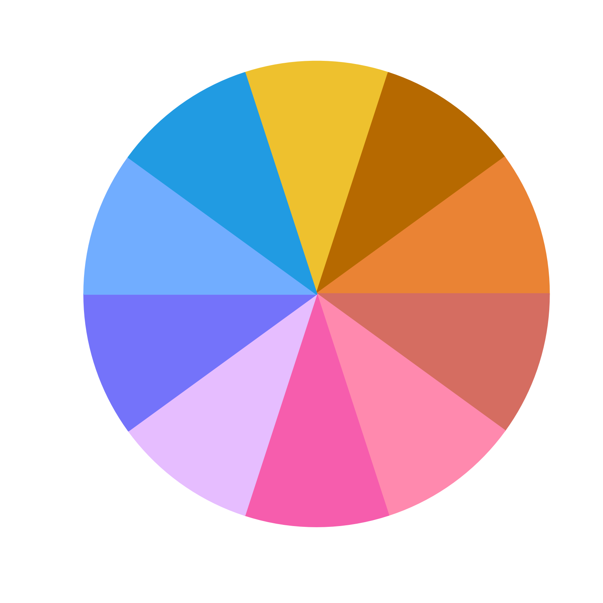

rainbow categorical colors using varied luminance and chroma
Source:R/colorjam-rainbowjam.R
rainbowJam.Rdrainbow categorical colors using varied luminance and chroma
rainbowJam( n = NULL, Hstart = 12.2, alpha = 1, hues = NULL, warpHue = NULL, preset = c("dichromat", "ryb", "ryb2", "rgb", "none"), h1 = NULL, h2 = NULL, Cvals = c(140, 150, 160, 130, 200, 100), Lvals = c(47, 85, 62, 42, 77, 54), Crange = NULL, Lrange = NULL, phase = 1, direction = c("1", "-1"), do_hue_pad = FALSE, hue_pad_percent = 50, nameStyle = c("none", "n", "hcl", "color", "closestRcolor"), doTest = FALSE, verbose = FALSE, ... )
Arguments
| n |
|
|---|---|
| Hstart |
|
| alpha |
|
| hues |
|
| warpHue |
|
| preset |
|
| h1, h2 |
|
| Cvals, Lvals |
|
| Crange, Lrange | vector of two numeric values which define the allowable
chroma (C) and luminance (L) ranges for |
| phase |
|
| direction |
|
| do_hue_pad |
|
| hue_pad_percent |
|
| nameStyle |
|
| doTest |
|
| verbose |
|
| ... | additional arguments are ignored. |
Value
vector of colors
Details
This function customizes similar functions grDevices::rainbow,
colorspace::rainbow_hcl(), and scales::hue_pal() in two main
ways:
It uses the warped color wheel (see
h2hw()which compresses the green component of the standard HCL color hue wheel, extending the yellow.It uses a varying luminance and chroma vector which was selected to optimize visual distinctiveness of adjacent colors. There is still a limit to the maximum number of effectively different categorical colors, however this function appears to improve other available methods.
This function is also intended to enable use of a custom color wheel,
for example a set of color mappings could define color-blind friendly
ranges of colors when using the warped hue functions h2hw() and
hw2h(). When warpHue=TRUE the values for h1 and
h2 are used to define a mapping from warped hues to standard
hues recognized by hcl().
See also
Other jam color functions:
closestRcolor(),
color_pie(),
group2colors(),
jam_pal(),
matrix2heatColors(),
rainbowJam_v1(),
scale_color_jam(),
scale_fill_jam(),
theme_jam(),
vals2colorLevels()
Examples
rainbowJam(12);#> [1] "#D92029" "#FF9C74" "#FF6300" "#A34F00" "#00D9FF" "#0084E9" "#0061FF" #> [8] "#B8C1FF" "#956FFF" "#7D24FA" "#FF65FF" "#D43FCD"# be fancy and label colors using the closest R named color jamba::showColors(names(rainbowJam(6, nameStyle="closestRcolor")));